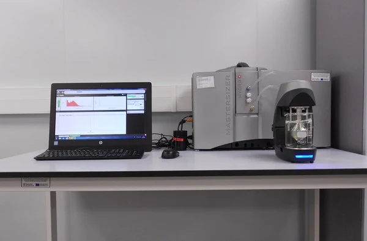
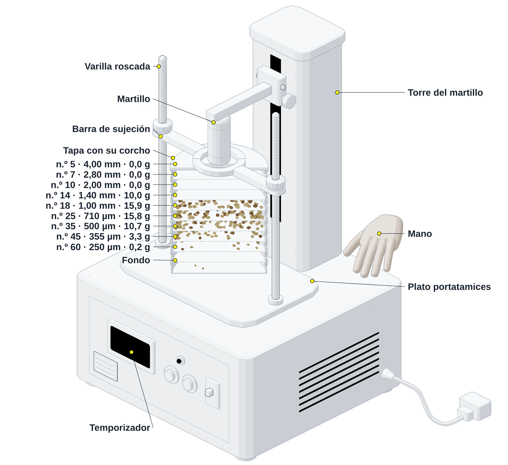
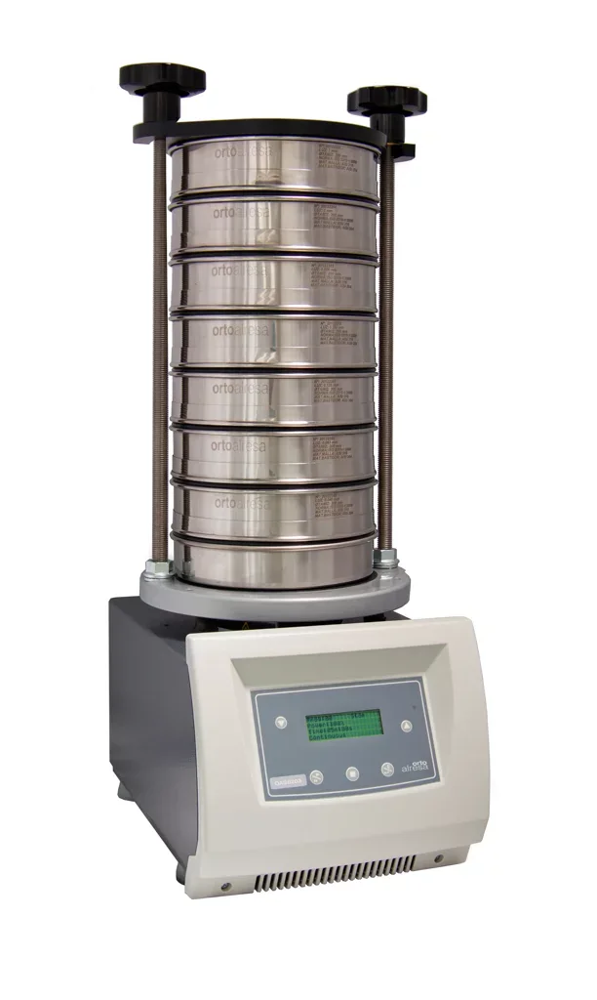
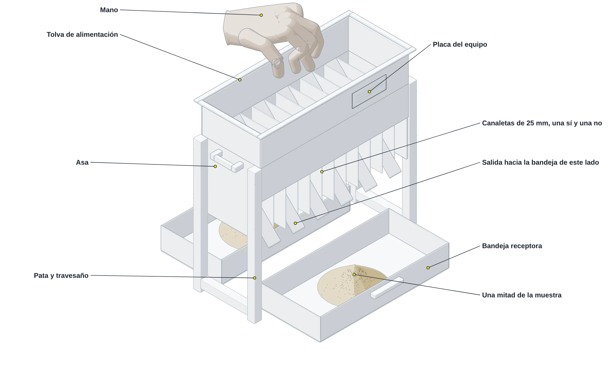

Proyecto de Operaciones Unitarias · Sesión 05
Propiedades de sólidos particulados
Los diámetros, el tamizado, la curva y sus modelos, el lecho y la muestra. La reducción de tamaño sigue en la presentación siguiente.
La sesión
Después del quiz, la clase de sólidos en dos presentaciones con el mismo hilo: primero cómo se describe un polvo y después cómo se reduce de tamaño.
El jueves 11 de febrero es el Taller 2, en Colab y en parejas: el tamizado de una arena y el de dos molinos, con los datos de su pareja. Lo que vea hoy es lo que necesita para hacerlo.
Un polvo, muchos tamaños
El tamaño de una esfera es uno solo: su diámetro. Un grano de caliza molida, con aristas, caras planas y largos que cambian según la dirección, admite varias respuestas a «¿cuánto mide?».
¿Qué tamaño tiene?
Se le asigna un diámetro equivalente: el de una esfera que daría el mismo resultado en el ensayo. Como el tamiz, el microscopio y la probeta de sedimentación miden cosas distintas, cada uno asigna una esfera diferente.
¿Cómo se reparten los tamaños?
Con una distribución, en masa si sale de pesar y en número si sale de contar, que un modelo resume en dos parámetros.
¿Qué hace el conjunto?
Su peso por metro cúbico, cuánto se compacta y si fluye fuera de una tolva o se atasca en un arco.
En su planta, el tamaño de la cáscara decide cuánto tarda el vapor en sacarle el aceite. Lo verá en la semana 4 y en el Laboratorio 1, que compara dos tamaños de cáscara.
La caliza molida
El caso del capítulo 5 del libro: el tamizado de una caliza molida, el mineral del que el capítulo 7 saca carbonato de calcio de uso alimentario. Sus números son los mismos en la tabla, las figuras, las animaciones y los ejemplos.
La caliza es calcita, de gravedad específica 2,711. Vertida con suavidad en una probeta de 250 mL pesa 302,5 g; golpeada hasta que el volumen deja de bajar, queda en 201,7 mL. Con esos números se calculan sus densidades y su fluidez en la parte 4.
Una partícula
Qué tamaño tiene un grano que no es una esfera, y qué tanto se aleja de ella su forma.
Diámetros equivalentes
Un grano, cuatro diámetros
En el microscopio se ve la silueta del grano, y en ella se miden tres diámetros: el de Feret, que separa dos rectas paralelas tangentes al contorno; el de Martin, la cuerda que divide el área en dos mitades iguales, y el del círculo de igual área, con el que se comparan los demás.
El tamiz no ve el contorno: el grano pasa girado por su ancho menor entre dos alambres. Por eso el diámetro de tamiz sale más chico que los del microscopio.
Ninguno de los cuatro es «el» tamaño del grano. El informe dice con qué método se midió, y dos informes se comparan solo si usaron el mismo.
Métodos de medición del tamaño
| Método | Intervalo (µm) |
|---|---|
| Tamiz de tela metálica | 32 a 5600 |
| Microscopio óptico | 0,5 a 150 |
| Contador Coulter (zona eléctrica) | 1 a 200 |
| Sedimentación por gravedad | 1 a 50 |
| Difracción láser | 0,04 a 2000 |
| Sedimentación centrífuga | 0,01 a 5 |
| Microscopio electrónico | 0,001 a 5 |
Capítulo 5 del libro, según Seader y sus coautores.
El tamaño se expresa según la escala: en milímetros para lo grueso, con la abertura del tamiz para lo fino, en micrómetros para lo muy fino y con el área por unidad de masa para lo ultrafino.
La base también cambia con el método. El tamizado pesa, y su distribución es en masa, ; el microscopio cuenta, y la suya es en número, . Una partícula de 100 µm tiene el volumen de un millón de partículas de 1 µm, así que al contar dominan los finos y al pesar, los gruesos.
Antes de medir hay que separar los granos, en un líquido con dispersante y ultrasonido o en un gas, sin que se disuelvan ni se aglomeren.
La difracción láser
El Mastersizer

Un difractómetro láser: la muestra se dispersa en el vaso de la derecha, el líquido la lleva a la celda que atraviesa el haz, y el computador invierte el patrón de anillos y devuelve la distribución.
En el Laboratorio 2, el asistente mide en él los viales de su emulsión después de la sesión y publica en Bloque Neón el diámetro de Sauter y la distribución de cada muestra.
Ese Sauter es el de los diámetros medios: la esfera con la misma relación entre área y volumen que sus gotas, que por eso indica cuánta interfase hay entre el aceite y el agua.
Esfericidad
La definición de Wadell compara el área de la esfera que tiene el volumen de la partícula con el área real de la partícula:
La esfera es la forma con menos área para un volumen dado; por eso es 1 solo para ella y menor para cualquier otra forma: 0,806 en un cubo, 0,874 en un cilindro de largo igual al diámetro y cerca de 0,65 en un material triturado.
Con ψ se corrige la relación área/volumen de la esfera para obtener la de cualquier grano, .
Hay tres esfericidades distintas. McCabe define con el tamaño nominal del tamiz o del microscopio, y con ella el cubo, el cilindro corto y la esfera valen 1,0. El análisis de imagen usa una tercera, en dos dimensiones, con los perímetros. Cada valor tabulado solo vale con la definición que usó su tabla.
| Forma o material | Valor | Definición |
|---|---|---|
| Cubo | 0,806 | Wadell |
| Cubo, cilindro corto | 1,0 | McCabe |
| Arena redondeada | 0,83 | McCabe |
| Materiales triturados | 0,6 a 0,8 | McCabe |
| Mica en hojuelas | 0,28 | McCabe |
El ensayo de tamizado
El método que más se usa en planta para medir un sólido: barato, rápido y con una norma, la ISO 2591-1.
La tamizadora de golpeteo

La pila describe órbitas en un plano horizontal mientras un martillo golpea la tapa desde arriba, como quien tamiza a mano: unas 278 oscilaciones y 150 golpes por minuto. Como la velocidad y la carrera no se ajustan, los resultados de un proveedor y de su cliente son comparables.
Los tamices son de una sola serie, y la pila se escoge para que no más del 5 % quede sobre el más grueso o pase por el más fino.
La carga tiene un límite: con demasiado material, una partícula no alcanza a llegar a la malla. La norma recomienda un volumen a granel según el tamiz de la fracción dominante; para el de 710 µm son 120 cm³, que con 0,470 g/cm³ son los 56,4 g del café.
Golpeteo y vibración

La tamizadora del laboratorio se parece a esta: vibratoria, sin martillo. La pila se sujeta con dos varillas roscadas sobre una base que vibra, y el tiempo y la intensidad se programan en el panel.
En la de golpeteo, las partículas se encuentran con las aberturas unas 2,5 veces por segundo, al ritmo de los golpes; en una vibratoria, unas 50. La vibratoria tamiza más rápido, y cada golpe de la de golpeteo le da más impulso a la partícula.
El final del ensayo depende de la intensidad, además del material, la carga y la abertura. Dos tamizados se comparan si se hicieron con el mismo tiempo y la misma intensidad, y el informe los dice.
El final y la aceptación del ensayo
0,1 % de la carga por minuto
Cuando por ningún tamiz pasa en un minuto más que eso. Un material friable, como el café aglomerado, hace polvo mientras se tamiza: su final se busca con ensayos y se acuerda un tiempo fijo.
Hasta 2 % de pérdida
Lo recuperado debe sumar al menos el 98 % de lo cargado. Las fracciones se refieren a lo recuperado, y la pérdida se informa por separado.
1 % y 0,5 %
Con la DIN 66165 el ensayo se repite si la pérdida pasa de 1 %, y en polvos farmacéuticos se descarta si pasa de 0,5 %. Un granulado que pierde 0,76 % vale con las dos primeras reglas y no con la tercera.
Por debajo de unos 40 a 75 µm el tamizado en seco se vuelve lento: los finos se cargan, se pegan y ciegan la malla. Las salidas son el tamizado en húmedo, el chorro de aire, los tamices electroformados y, por debajo de todos, la difracción láser.
La distribución de tamaños
El peso de cada tamiz, la curva acumulada, los modelos que la resumen y los diámetros medios.
El tamizado de la caliza
| Abertura (mm) | Retenido (g) | |||
|---|---|---|---|---|
| 2,000 | 0,4 | 0,0020 | 0,0020 | 0,9980 |
| 1,400 | 3,5 | 0,0177 | 0,0197 | 0,9803 |
| 1,000 | 12,3 | 0,0622 | 0,0819 | 0,9181 |
| 0,710 | 21,6 | 0,1093 | 0,1912 | 0,8088 |
| 0,500 | 30,3 | 0,1533 | 0,3445 | 0,6555 |
| 0,355 | 27,4 | 0,1386 | 0,4831 | 0,5169 |
| 0,250 | 26,2 | 0,1325 | 0,6156 | 0,3844 |
| 0,180 | 18,6 | 0,0941 | 0,7097 | 0,2903 |
| 0,125 | 16,3 | 0,0824 | 0,7921 | 0,2079 |
| 0,090 | 10,5 | 0,0531 | 0,8452 | 0,1548 |
| 0,063 | 8,9 | 0,0450 | 0,8902 | 0,1098 |
| fondo | 21,7 | 0,1098 | ||
| Total | 197,7 | 1,0000 |
La diferencial expresa como fracción de la masa lo que retiene cada clase, , es decir, lo que quedó entre dos tamices. La acumulada se suma desde los finos: es la fracción que pasa por la abertura , y la que queda retenida.
Faltan 0,7 g, el 0,35 %, que se quedaron en las mallas y en el aire: las fracciones se calculan sobre lo recuperado.
La mediana se interpola entre los dos tamices que la encierran, los marcados, en línea recta sobre el logaritmo del tamaño:
Da = 0,339 mm, y del mismo modo = 0,696 mm. El no se puede leer: el 11 % pasa por el tamiz más fino.
La curva acumulada
Cada masa dividida por 197,7 g es la fracción de su clase. Dividida además por el ancho de su clase en el logaritmo, cada barra es una densidad, , y su área es la fracción.
Sin esa división la figura engaña: en escala logarítmica las clases de la serie tienen anchos distintos, y con la fracción sola una clase ancha parecería hasta 11 % más pesada que una angosta.
Al fondo le falta la abertura inferior, de modo que no tiene ancho ni densidad. Por la masa del fondo, la curva no se puede prolongar hasta cero.
Densidad y curva acumulada
Arriba, la densidad de cada clase, con el máximo entre 0,5 y 0,71 mm. Abajo, la curva acumulada con los dos tamaños característicos interpolados.
Los tamaños llevan dos subíndices: el porcentaje que pasa y la base. deja pasar el 50 % de la masa, y , el 80 %.
El es el tamaño con que la ley de Bond calcula la energía de molienda; se llama en la alimentación y en el producto, y vuelve en la presentación siguiente.
Tres modelos de distribución
es la abertura que deja pasar el 63,2 %, y mide el ancho de la distribución: cuanto mayor es, más angosta resulta.
Se propuso para el carbón pulverizado y ajusta bien el extremo grueso de una molienda.
es el tamaño mayor del producto y , la pendiente en escala doble logarítmica, entre 0,5 y 0,7 en la práctica.
Ajusta bien los finos de una molienda.
es la mediana del modelo y , la desviación estándar de ; la desviación geométrica es .
Es simétrica en el logaritmo del tamaño, y sigue siendo log-normal al cambiar de base.
Que un modelo vaya con cierto material es solo una tendencia; el que se usa lo deciden los datos. En el caso, que es un producto de molienda, la log-normal es la que peor ajusta.
El ajuste por mínimos cuadrados
La pendiente da un parámetro y el corte, el otro. Un alto en la forma lineal no basta: el doble logaritmo estira los extremos, y el ajuste se juzga en la curva, por el error medio en puntos porcentuales de pasante.
El ajuste de Rosin-Rammler, paso a paso
Dos logaritmos vuelven el modelo una recta. La regresión de los once tamices da una pendiente de 1,148 y un corte de 0,932, con = 0,998:
Sobre la curva original, el modelo queda en promedio a 1,3 puntos porcentuales de los datos. Esa cifra, y no el , es la que sirve para comparar modelos.
Con el modelo se lee cualquier tamaño, : = 0,323 mm y = 0,672 mm, a 5 y 3 % de lo interpolado.
Qué modelo usar
| Modelo | lineal | Error medio | En los finos |
|---|---|---|---|
| Rosin-Rammler | 0,998 | 1,3 puntos | 1,1 puntos |
| Gates-Gaudin-Schuhmann | 0,954 | 6,1 puntos | 2,5 puntos |
| Log-normal | 0,949 | 6,4 puntos | 5,6 puntos |
Error medio sobre los once tamices y sobre los cinco de 0,25 mm o menos.
Más allá de los datos, cada modelo prolonga su propia forma, y lo que da no es una medición. A 0,01 mm, el pasante es de 3,9 % con Gates-Gaudin-Schuhmann, de 1,3 % con Rosin-Rammler y casi nulo con la log-normal. Si los finos importan, hay que medirlos con otro método.
Gana el modelo que menos se equivoca en los tamaños que importan: los gruesos, si se necesita el para la energía de molienda; los finos, si preocupa lo que se escapa con el polvo de un ciclón.
El área de los finos
Cada pregunta pide su propio promedio. El de Sauter, o de superficie-volumen, corresponde a una esfera con la relación área/volumen del polvo, y de él se calcula el área específica:
El fondo de la caliza tiene el 11 % de la masa. Si se deja por fuera, el área es de 11,6 m²/kg; con su media aritmética, 21,3, y con el modelo, 54,9 m²/kg, con el 81 % del área en el fondo.
El área de un polvo la deciden los finos, y el tamizado es justamente lo que no los ve. Para una disolución, una reacción o una filtración, los finos se miden.
El lecho
Tres densidades, la porosidad, la fluidez y lo que cambia cuando el polvo es un alimento o puede explotar.
Tres densidades
- La verdadera, , la del material sin poros, por picnometría.
- La de partícula, , con los poros internos de cada grano: para una partícula que se mueve en un fluido.
- La a granel, , con los huecos entre los granos: para el volumen de una tolva, un silo o un transportador.
La densidad a granel no es una propiedad del material: depende de cómo se empacó el lecho. «Densidad aparente» es mejor no decirlo, porque cada libro la entiende a su manera.
Los índices de Carr y de Hausner
Sin poros internos, la densidad de partícula es la de la calcita, 2711 kg/m³, y las porosidades son = 0,554 suelta y 0,447 asentada.
Los dos índices miden lo mismo, cuánto se compacta el lecho, y uno sale del otro: . Un polvo que se compacta mucho suele ser cohesivo.
Escalas de fluidez
Con = 19,3 % y = 1,24, la caliza tiene fluidez buena, cerca de la regular, para Carr; cohesión media para Koç, y flujo medio, en el borde con el difícil, para Hayes.
Las escalas no cortan en el mismo lugar: el corte de 1,2 de Koç cae en un índice de Carr de 16,7 %, en medio de la clase «buena».
Los índices sirven para comparar lotes de un mismo polvo. Una tolva se diseña con la función de flujo, medida en una celda de corte: la resistencia que gana el polvo cuando se consolida, con las cuatro clases de Jenike. Es tema del capítulo 8.
Ángulo de reposo y polvos alimenticios
La falda de una pila
Por debajo de 35° el polvo fluye libre; por encima de 55° es muy cohesivo. Depende del aparato y no sirve para diseñar: es un ensayo de control de calidad.
200 µm
Como regla, los polvos de más de 200 µm fluyen libres y los más finos empiezan a tener problemas de cohesión. Una distribución angosta fluye mejor que una ancha.
Forma, agua y disolución
Formas que varían más que las minerales; humedad que forma puentes líquidos y apelmaza, contra la que se agregan antiaglomerantes como el carbonato de calcio, y finos de menos de 100 µm que forman grumos en el agua.
Por eso se aglomera un polvo que se va a disolver: gránulos de varios milímetros con huecos grandes, que dejan salir el aire y entrar el agua, como en el café instantáneo del capítulo 6.
Explosividad de polvos
El azúcar, la harina, el almidón, la leche en polvo y el cacao arden, y si una nube de ellos puede explotar se mide con ensayos normalizados en un recipiente cerrado:
- MEC, la concentración mínima explosiva, y MIE, la energía mínima de ignición.
- LOC, la concentración límite de oxígeno.
- , la presión máxima de explosión, y la velocidad máxima de subida de la presión, que da el índice de deflagración, .
Entre más fino el polvo, más área por kilogramo expone, más rápido arde y más fácil forma una nube. La humedad trabaja al revés. Por eso los datos de un polvo se dan con su tamaño y su humedad.
| Clase | (bar·m/s) |
|---|---|
| St 0, no explota | 0 |
| St 1 | más de 0 y hasta 200 |
| St 2 | más de 200 y hasta 300 |
| St 3 | más de 300 |
Según el Perry. El capítulo 8 del libro define cada número y trata la prevención y el alivio.
Un valor medido en una muestra gruesa no vale para los finos que se asientan en una viga o en un filtro.
La muestra
Todo lo anterior se mide en unos cientos de gramos que tienen que representar a un lote de toneladas.
Las cuatro reglas del muestreo
- 1El polvo en movimientoEn un punto de transferencia. Una sonda en un lecho quieto, que ya segregó, sesga la muestra.
- 2Toda la corriente, muchas vecesEn muchos intervalos cortos, y no una parte de la corriente todo el tiempo, sin que el recipiente rebose.
- 3La muestra completaDividida si hace falta: la segregación dentro de la muestra no importa si se analiza entera.
- 4Una masa suficienteLa fija el número de partículas gruesas que tienen que estar representadas.
Gy le puso número a la cuarta regla. La masa mínima crece con el cubo del tamaño de los fragmentos más gruesos y con el inverso de la varianza que se tolera:
Reducir el error a la mitad pide cuatro veces la muestra. Duplicar el tamaño de los fragmentos pide 5,7 veces mientras el componente está encerrado en ellos, y 8 veces cuando ya está liberado.
El error de muestreo es el más traicionero, porque se confunde con una variación real del material y lleva a corregir un proceso que estaba bien.
Dividir una muestra

| Método de división | Error máximo |
|---|---|
| Cono y cuarteo | 22,7 % |
| Pala | 17,1 % |
| Mesa de división | 7,0 % |
| Divisor de rifles | 3,4 % |
| Divisor rotatorio | 0,42 % |
Al dividir una mezcla 60:40 de arena de flujo libre, según el Perry.
La manera tradicional, apilar en un cono y quedarse con dos cuartos opuestos, es también la peor.
El divisor de rifles
La muestra se vierte pareja a lo largo de toda la fila. Cada canaleta recibe una tajada de toda la corriente y la manda a su bandeja: seis hacia cada lado.
Cada bandeja recibe la mitad, con la misma mezcla de tamaños. Si una de las mitades vuelve a pasar queda un cuarto, y después de pasadas, de la muestra.
El divisor rotatorio va más lejos: un anillo de recipientes gira bajo el chorro, y cada uno recoge muchos incrementos pequeños de todo el material. Es la regla 2 llevada al extremo.
Los sólidos de su planta
Lo mismo que vio con la caliza, ahora con la cáscara de los cítricos.
Antes de confiar en un tamizado
La cáscara en el semestre
Taller 2
El tamizado de una arena para un filtro rápido y el de dos molinos para maíz, en Colab, con los datos de su pareja.
Bitácora 1
La materia prima, el diagrama de bloques y cómo se preparan los sólidos de su planta.
El arrastre
El tamaño de la cáscara y el tiempo que tarda el vapor en sacarle el aceite.
Laboratorio 1
El Clevenger con cáscara de naranja, con dos tamaños de cáscara para comparar.
El Explorador de molienda y tamizado del curso ajusta los tres modelos a un tamizado, con la tamizadora de golpeteo por dentro. Sirve para preparar el taller.
IQYA-2031 · Sesión 05
Sigue: reducción de tamaño
La sesión sigue con la presentación de reducción de tamaño: las máquinas y el desgarrado de la cáscara húmeda. El jueves 11 de febrero es el Taller 2, en Colab.
Figuras: capítulos 5 y 6 del libro de operaciones unitarias del curso. Fotos: una tamizadora vibratoria de Orto Alresa, parecida a la del laboratorio, y un Mastersizer de otro laboratorio, el mismo equipo del Laboratorio 2. Grabados, vía Wikimedia Commons: «Citrus, Citronier» y «Citrus aurantium», New York Public Library, dominio público; «Un boticario y un alambique primitivo» y «Rama de cítrico con dos frutos», Wellcome Collection, CC BY 4.0; «Citrus madurensis», Francisco Manuel Blanco, dominio público.